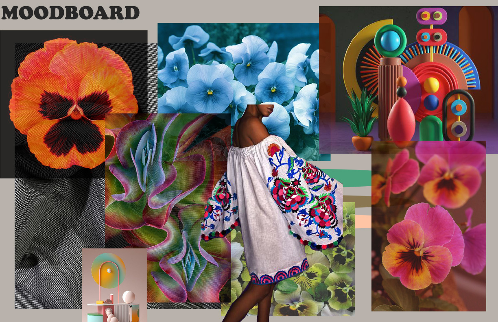
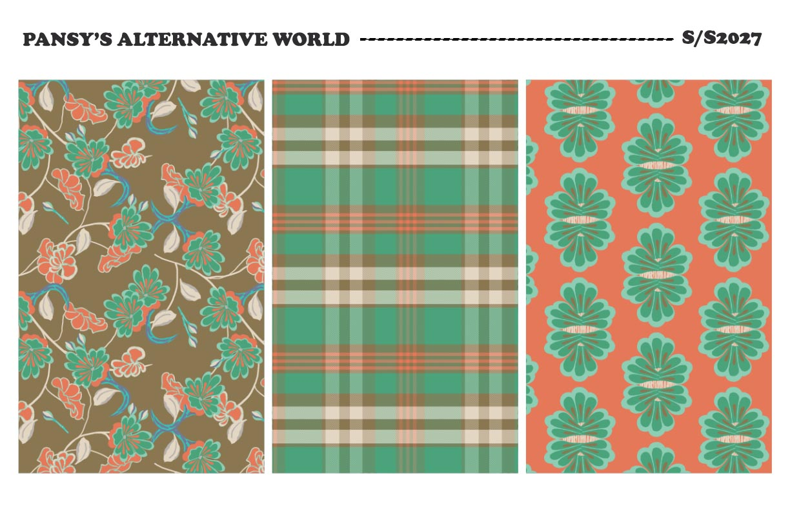
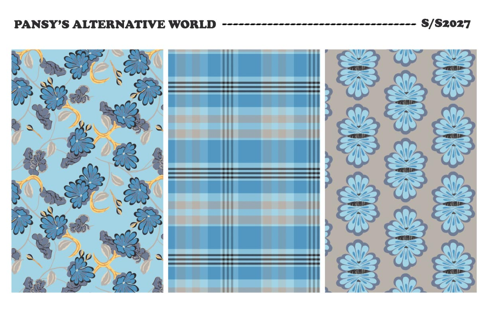
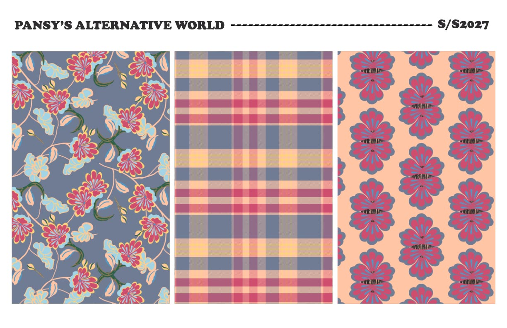
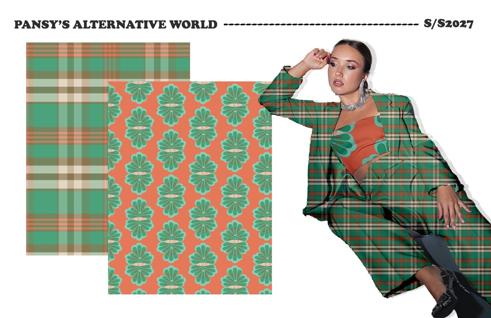
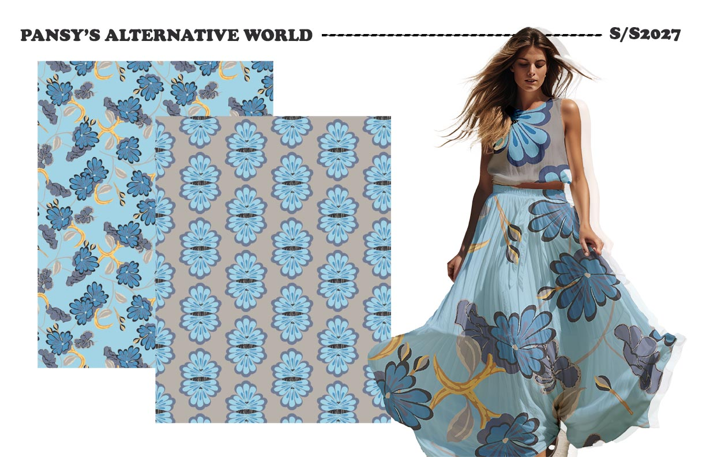
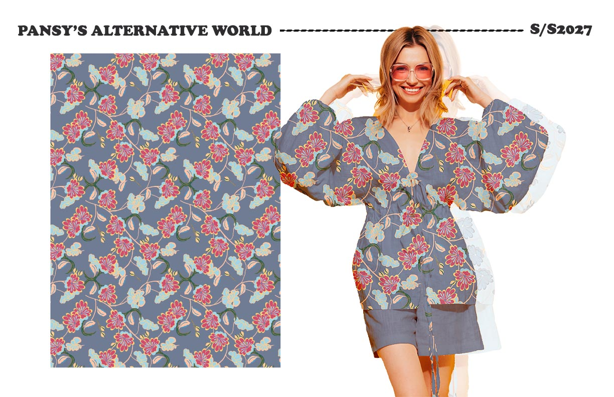

Overview
Pansys Alternative World is a conceptual print collection exploring surreal, floral universes through layered textures and dimensional colors. The pansy serves as a portal to alternate realities.
Concept & Moodboard
This moodboard sets the tone for an imaginative, layered world blending botanical softness with speculative design.
Final Print





